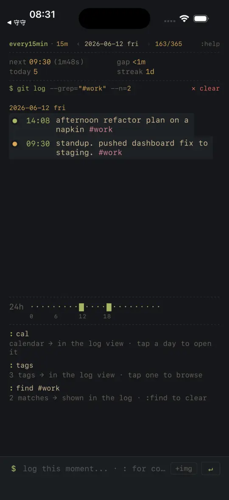
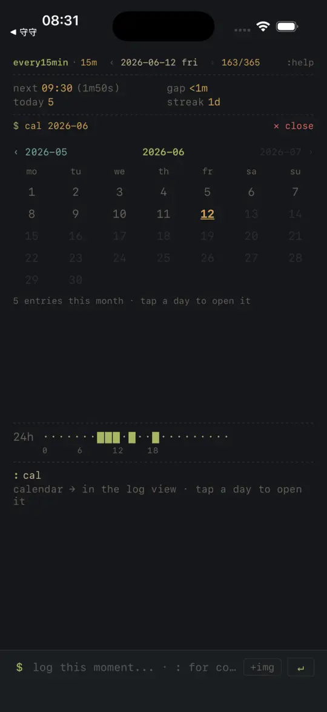
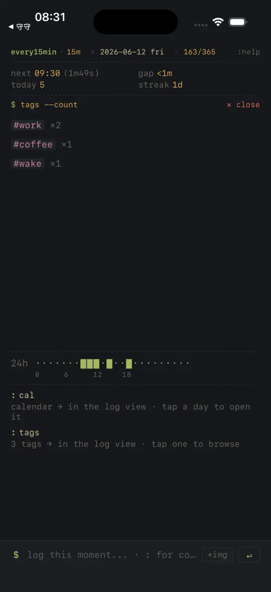

TokenDance · Tony 的独立应用
做小而好用的工具。
一个人做 iOS 和 macOS 小工具。每个应用都从生活里一个具体的麻烦开始，做到自己每天愿意用为止。没有账号，没有广告，数据只存在你的设备上。
无账号✳无广告✳无追踪✳数据只在你的设备上✳一个人长期维护✳
无账号✳无广告✳无追踪✳数据只在你的设备上✳一个人长期维护✳
every15min
终端风格的时间记录 · iPhone · 已上架 App Store
打开就是今天的日志，像在终端里一样敲一行“刚才在干嘛”。默认每 15 分钟提醒一次，每条记录带时间戳和标签。
every15min · 15m · today
:help
next 16:00 today 0 streak 12d
24h
$



-
$ git log
一条一条，记下刚才
不用写日记。一句话加一个标签，时间自动记上。想找某件事，find #work 就出来了。
-
$ cal
按日历翻回任意一天
哪天记了多少一目了然，点一下就回到那天的日志。
-
$ tags --count
标签告诉你时间去哪了
#work、#coffee、#wake……按标签统计，再加一条 24 小时时间轴，空白的时段一眼可见。
守守 Goldie
癫痫用药提醒与发作记录 · iPhone
守守是一只金毛，现实里金毛正是最常见的癫痫辅助犬。它陪你按时吃药、记下每次发作，把“平安的天数”记下来，而不是只数发作次数。
- 吃药打卡一天多次自动分组，漏服可补记，支持小组件、灵动岛和 Siri。
- 发作记录时间、时长、诱因、意识状态，复诊时说得清楚。
- 看病资料病历、化验单拍照存档，记下想问医生的问题。
- 放松练习呼吸、肌肉放松、身体扫描、着陆练习，带语音引导。
- 守护圈紧急联系人一键拨打，急救信息卡一键复制。
守守是记录工具，不提供诊断或治疗建议。
正在做的
Code Buddy
macOS 菜单栏里的编程助手，随手调出，处理写代码时的零碎小事。
开发中
广告拦截助手
拦截广告、弹窗和跟踪器，让屏幕安静一点。
开发中
想在上线时收到通知？给我发封邮件。
关于
应用里不放广告 SDK，不做跟踪，不需要注册。记录保存在你的手机上，我这边看不到任何内容。
- 需要注册账号吗？
- 不需要。every15min 和守守都没有账号系统。
- 守守能代替医生吗？
- 不能。它帮你把情况记清楚，治疗请听医生的。
- 遇到问题怎么联系？
- 发邮件到 tonybingpoon@gmail.com，我会亲自回复。